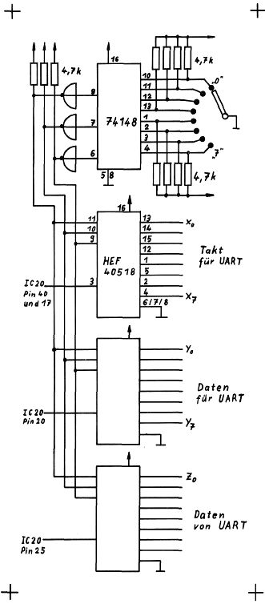

Nascom Journal |
September 1982 · Ausgabe 9 |
Computers mit dem Read-Kommando das komplette System hochfahren. Ist der Recorder voll fernbedienbar, ist der Aufbau eines „NAS-KOS“ in Basic nicht mehr schwer, was ich der Fantasie der Leser überlassen will.
Will man mehrere Geraete an der UART betreiben die auch noch unterschiedliche Pegel und Baudraten haben, ist man gezwungen dauernd die Geraete umzustecken und Baudraten zu aendern. Die untenstehende Schaltung schafft hier Abhilfe . Der Prioiritaetsenkoder SN74148 liefert die Binaeradresse fuer die Multiplexer/Demultiplexer HEF 4051B. An den Eingaengen X0-X7 sollte der entsprechende Takt fuer die UART anliegen (z.B. IC31 Pin 1 fuer 2400 Baud ect.). Die aufbereiteten Daten zur UART werden an die Eingaenge Y0-Y7 angelegt (z.B. IC29b Pin 12 fuer den Kassettenrekorder). Die Ausgaenge Z0-Z7 leiten die Daten zu den entsprechenden Treibern (z.B. IC33b Pin 5 fuer den Kassettenrekorder). Durch hinzufuegen weiterer Multiplexer kann z.B. die Information Cass.-LED „ON“ umgeschaltet werden, oder Geraete ein und ausgeschaltet werden. Auch kann man wenn an einer PIO noch drei Bit frei sind das ganze per Software steuern.
Suche Nascom-Journal Nr.
8-12/80,
9-10/81 und
1/82.
Rolf Kottke
___________ _
____ ______ __
Verkaufe V.24 Terminal
bedingt einsatzfähig, da spezielle Leitungsprozedur. Beinhaltet
schnellen S/W Monitor (12″), Keyboard mit Hall-Schaltern (kein
ASCII-Code). Schaltbeispiel für Umcodierung und alle anderen Unterlagen
sind vorhanden. Zudem Netzteil alle Spannungen (5V/10A!) und schönes
Gehäuse. VB DM 350.–
Dieter Oberle ________.__
____ ______________
Tel._____/____
2 Digitale Cassettenrecorder (Normalcassette)
Aufzeichnungsformat NRZ, digital steuerbar über TTL. DM 150.– pro
Stück.
Dieter Oberle ________.__
____ ______________
Tel. _____/____

Suche Matrixdrucker (Normalpapier) schnell,leise,grafikfähig und
preisgünstig
Günter Böhm ____/______
______________ ___. __ _
__ _________
Suche Nascom2 Dokumentation auf Deutsch.
Georg Assmann _____/____
___ ____ __
____ __________.
| Seite 18 von 28 |
|---|